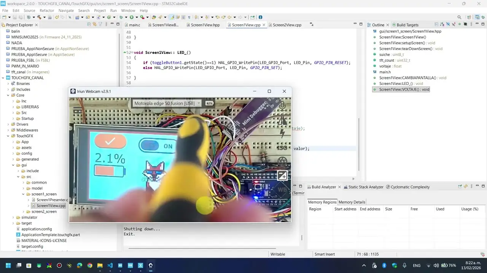

En TouchGFX Designer se agrega un Toggle Button (en Preset se elige el estilo ON/OFF).
En Interactions: Trigger "Button is clicked", botón toggleButton1, Action "Call new virtual function" con el nombre LED_. Generate Code.
Seguimos con el proyecto TouchGFX de la ILI9341 táctil. Se agrega un Toggle Button que enciende y apaga el LED de la Blackpill mediante una función virtual. Luego se lee un potenciómetro por ADC en el main y, con una interacción por ticks, se muestra en un Line Progress con estilo de batería y en un Text Area con wildcard, primero como entero y luego como flotante en voltios. Puntos clave: el código propio va en la carpeta gui, no en gui_generated; después de cambiar un widget siempre se llama invalidate(); y la fuente del texto debe incluir los caracteres del wildcard.

En TouchGFX Designer se agrega un Toggle Button (en Preset se elige el estilo ON/OFF).
En Interactions: Trigger "Button is clicked", botón toggleButton1, Action "Call new virtual function" con el nombre LED_. Generate Code.
Como en la clase anterior: en TouchGFX/generated/gui_generated/include se busca la función virtual creada en Screen1ViewBase.hpp y se copia a gui/include/gui/screen1_screen/Screen1View.hpp.
// gui/include/gui/screen1_screen/Screen1View.hpp
class Screen1View : public Screen1ViewBase
{
public:
Screen1View();
virtual ~Screen1View() {}
virtual void setupScreen();
virtual void tearDownScreen();
virtual void CAMBIAPANTALLA();
virtual void LED_(); // nueva: boton toggle
virtual void VOLTAJE(); // nueva: cada N ticks
protected:
};En gui/src/screen1_screen/Screen1View.cpp se escribe la función. getState() devuelve el estado del toggle. Si le pones nombre al widget en TouchGFX, se usa ese nombre en lugar de toggleButton1.
// gui/src/screen1_screen/Screen1View.cpp
void Screen1View::LED_()
{
// el LED de la Blackpill enciende con 0 (logica invertida)
if (toggleButton1.getState() == 1) HAL_GPIO_WritePin(LED_GPIO_Port, LED_Pin, GPIO_PIN_RESET);
else HAL_GPIO_WritePin(LED_GPIO_Port, LED_Pin, GPIO_PIN_SET);
}Se pega la librería ADC del canal en LIBRERIAS y se incluye en el main. Se habilita float en printf en Properties > C/C++ Build > Settings > MCU Settings.
Se crea la variable voltaje y en el while se lee el ADC de 12 bits y se escala de 0 a 100 %.
/* USER CODE BEGIN Includes */
#include "adc.h" // libreria ADC del canal
/* USER CODE END Includes */
/* USER CODE BEGIN PV */
float voltaje;
/* USER CODE END PV */
while (1)
{
voltaje = ADC_Read(&hadc1) * 100.0 / 4095.0; // 0 a 100 %
MX_TouchGFX_Process();
}El nombre del archivo de la librería ADC puede variar en tu versión; lo importante es la función que lee el canal (ADC_Read en este caso).
Se agrega un Line Progress y en Preset > stylized se elige batteries (también hay termómetros). Rango 0 a 100. Se le pone de nombre VOLTIOS.
Otra interacción: Trigger "on every N tick" y Action "Call new virtual function" llamada VOLTAJE (se recomienda escribir los nombres en mayúsculas). Se declara en Screen1View.hpp igual que LED_.
En Screen1View.cpp se declara extern float voltaje; y en VOLTAJE() se le da el valor a la barra con setValue.
Siempre que cambies un widget, termina con invalidate(); si no, la pantalla no se actualiza.
Se agrega un Text Area con nombre VOLT_TEXT. En Translation se borra el texto y se deja solo
Se desmarca Auto-size para ajustar el tamaño a mano.
En Texts > Typographies se crea una tipografía (Large, Verdana 40 px). En Wildcard Characters se escriben los caracteres que usará: 0123456789.,% . TouchGFX solo genera esos caracteres, así ahorra memoria.
Se asigna esa tipografía al Text Area y se genera código.
Para enteros se usa Unicode::snprintf con %d; para decimales Unicode::snprintfFloat con %.1f. Aquí el valor se pasa de 0-100 a voltios (0 a 3.3).
VOLT_TEXTBuffer y VOLT_TEXT_SIZE los genera TouchGFX con el nombre del widget en mayúsculas; por eso conviene nombrar todo en mayúsculas y así copiar y pegar sin errores. Si no aparecen, compila primero.
En el video el número no cambiaba hasta agregar VOLT_TEXT.invalidate().
extern float voltaje;
#include "main.h"
void Screen1View::VOLTAJE()
{
VOLTIOS.setValue(voltaje); // barra tipo bateria (0 a 100)
VOLTIOS.invalidate();
// muestra enteros
// Unicode::snprintf(VOLT_TEXTBuffer, VOLT_TEXT_SIZE, "%d", (int)voltaje);
// muestra flotantes (en voltios)
float valor = voltaje * 3.3 / 100;
Unicode::snprintfFloat(VOLT_TEXTBuffer, VOLT_TEXT_SIZE, "%.1f", valor);
VOLT_TEXT.invalidate(); // sin invalidate no se actualiza la pantalla
}Al mover el potenciómetro la batería y el número cambian; el toggle sigue prendiendo el LED. Si agregas % en el formato, aparece el porcentaje.
También existe Text Progress, que muestra el valor solo como entero.